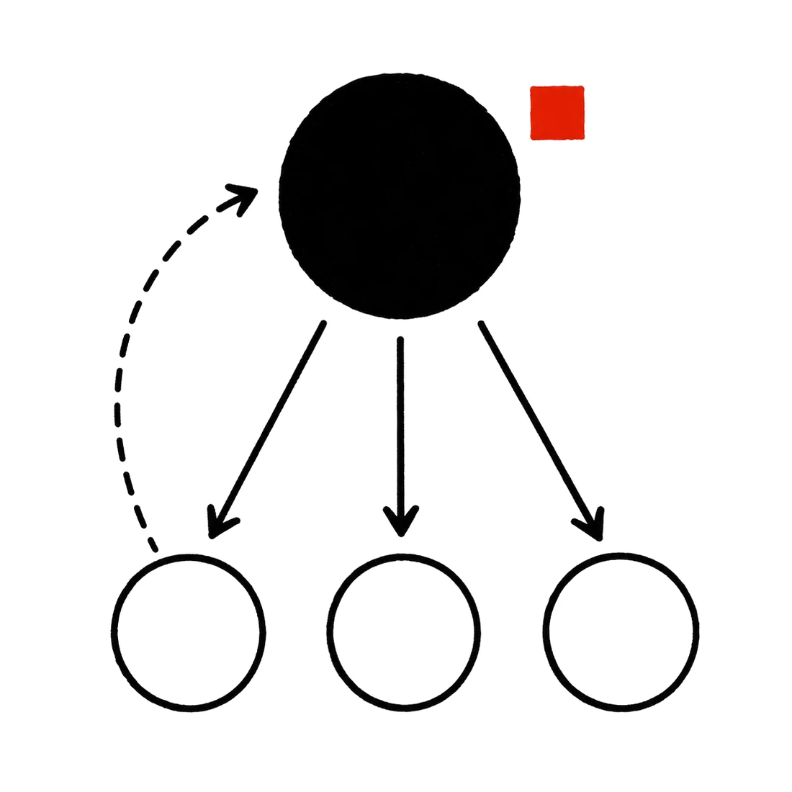

04
"복잡한 건 오케스트레이터가 한다"는 축은 틀렸다. DISPATCH-ECONOMY-01은 명세가능성 × 검증가능성 × 판정소유권의 3축으로 파견을 판별한다 — 판정(collapse/crux)은 메인이 쥐고, 재도출과 규격화된 구현과 조사는 파견한다.
원래 원칙은 "복잡한 로직은 오케스트레이터가 구현한다"였다. 적대적 fork 토론이 이 축을 라이브 모순으로 판정했다: SPECIALIST-CRUX-01은 어려운 도메인 밖 crux를 스페셜리스트에게 first-principles 재도출시키라고 명하는데, 복잡성 축은 정확히 그 파견을 금지한다. 복잡성은 처음부터 잘못된 축이었다.
fork-debate pre-finding — codexclaw/devlog/_plan/260711_dispatch_economy_docs_site/005_research_claim_ledger.md §2

파견 여부는 세 축으로 판별한다. 패킷이 자신의 결정 경계를 진술하지 못하면 명세가능성에서 탈락하고, 그 슬라이스는 메인에 남는다.
| 축 | 질문 |
|---|---|
| 명세가능성 | 과업 패킷이 입력·출력·결정 경계를 완결적으로 진술하는가? |
| 검증가능성 | 반환물을 메인이 기계적으로(앵커·수치·재현 명령) 검사할 수 있는가? |
| 판정소유권 | collapse/crux 판정인가? 판정은 메인 소유 — 재도출·규격화 구현·조사·audit은 파견 가능. |
DISPATCH-ECONOMY-01 — codexclaw/structure/20_pabcd_dispatch_doctrine.md §3 (:152)
실패한 파견의 처리도 규칙이다: 서로 다른 두 에이전트가 같은 TASK 패킷에 실패하면 에이전트가 아니라 패킷이 명세가능성 불합격이다 — 메인이 그 슬라이스를 회수한다(DISPATCH-RETIRE-01).
codexclaw/structure/20_pabcd_dispatch_doctrine.md:146 부근 (RETIRE amendment)
파견의 병목은 생성이 아니라 선별이다. 모든 반환물은 다음 wave를 스폰하기 전에 accept/reject/merge 판정과 한 줄 근거를 받는다(wave 단위 허용). 반환물에는 verbatim 앵커 — file:line 원문 인용, 정확한 수치, URL — 가 의무다: 앵커 없는 요약은 메인과 리뷰어에게 상관된 사각지대를 만든다.
triage disposition + verbatim anchors — doctrine §3 · DISPATCH-TASK-01 RETURN FORMAT
모델 라우팅 기본값: 규격화된 구현은 저비용 계열로, crux와 적대적 리뷰는 탈상관 강모델로(REVIEW-DECORRELATE-01 — 리뷰어는 생산자와 다른 모델 계열). 이 페이지가 속한 유닛 자체가 사례다: 같은 계열 리뷰어 2라운드가 놓친 "열거 불가능한 검증기" 블로커를 탈상관 리뷰어가 1라운드 만에 잡아냈다.
codexclaw/devlog/_plan/260711_dispatch_economy_docs_site/041_wp4_impl_record.md (A-gate trail)
아래 표는 인덱스의 참고 문헌 10편이 실제로 어느 조항을 지지하는지의 매핑이다. 저등급 2편은 교리에도 같은 플래그로 남아 있다 — 근거의 등급을 숨기지 않는 것 자체가 이 방법론의 일부다.
| 논문 | 지지하는 조항 |
|---|---|
| 2606.09730 | 분해·위임 시점·통합은 메인의 판단 소유(ECONOMY-01 전문) |
| 2603.20324 | triage 의무 — "선별자 품질이 생성 다양성보다 큰 지렛대" |
| 2406.07155 | triage 의무(약한 지지) — 협업 스케일링은 로지스틱 포화 |
| 2503.13657 | triage 의무 — 검증 실패가 1급 실패 범주(kappa 0.88) |
| 2603.04257 | verbatim 앵커 의무 — 요약은 증거를 버린다, 인덱스로 역참조 |
| 2510.11967 | 컨텍스트 방화벽 — 작업 경계 접기가 단순 요약을 능가 |
| 2510.00615 | 컨텍스트 방화벽 효과 — 피크 토큰 26-54% 절감, 성공률 상승 |
| 2510.04371 | 투기 파견 기본 금지 — 예측 정확도(≤55%)가 이득(≤20%)을 상한 |
| 2606.07846 | 투기 파견 — 기대값 규칙은 분기 폭 증가에 자기 제동 |
| 2603.11445 | 검증도 비용 항목 — 품질/자원을 저울질하는 정지 조건 |
전체 claim-ledger(발표일·verbatim 인용·귀속 정정 로그 포함): codexclaw/devlog/_plan/260711_dispatch_economy_docs_site/005_research_claim_ledger.md
phase N이 끝나기 전에 N+1의 작업을 미리 파견하는 speculative dispatch는 기본 금지다(DISPATCH-SPECULATE-01 HEURISTIC). 유일한 예외는 repo 상태와 무관한 phase-invariant 외부 조사(arXiv, 라이브러리 문서)뿐이고, 그 결과도 candidate — unverified로 격리되며 plan amend 시 기본 폐기된다. 근거는 위 표의 두 논문: 다음 행동 예측 정확도가 이득을 상한하고, 비용 인지 기대값 규칙은 부작용 없는 엣지에서만 발화한다.
codexclaw/plugins/codexclaw/skills/loop/SKILL.md:164 부근 (HEURISTIC 단락) · arXiv:2510.04371 · arXiv:2606.07846